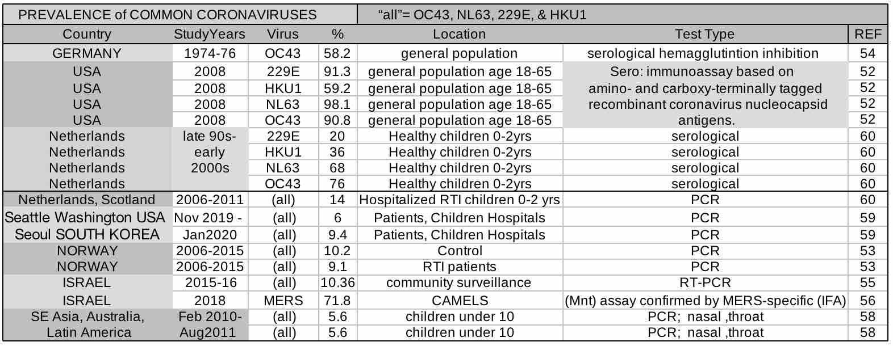

Dr. Michael Levitt's Diamond Princess Analysis: Anniversary Edition
March 2020 it was possible to accurately assess the extent of the impact of Covid-19
March 2020: the increasing presence of SARS-CoV-2 around the world and news of Italy's outbreak and strict lockdown response was causing alarm; Neil Ferguson and the Imperial College of London's predictions of high amounts of deaths [18] and the intention of policymakers like Boris Johnson to employ severe lockdown restrictions were widely circulated [27].
Dr. Michael Levitt of Stanford University had been doing continuous real-time data analysis of the Covid-19 epidemic in China since it's start [9], then the rest of the world as it spread [28], and recognized that the estimates of deaths being publicized were far too high.
As government officials made decisions about how to respond, he combined knowledge of his China analysis with contemporary scholarship and the impact of the Covid outbreak and quarantine on the cruise ship the Diamond Princess to accurately ascertain the true burden the pandemic would have on societies.
Its possible for the analysis to be so definitive because circumstances on a cruise ship are defined and mimic an intensified version of normal life, where:
there is 100% exposure and...
high contact rates lead to high reproduction numbers among...
a vulnerable population
Many sound studies and data were available that when carefully analyzed, together provided everything necessary to accurately predict the scope of outcomes
Dr. Levitt’s analysis quickly revealed:
true amount of death that could be expected would be around the equivalent of 1 month's worth of normal death
a model that highly over projected deaths by 9 times, even for worst-case scenerios with 100% exposure was used to justify decisions
Covid-19 was allowed to run rampant on the Princess, yet high amounts of immunity was established without high amounts of death.
The Diamond Princess compared to a normal community
“...quarantine on the DP cruise ship, the enclosed circumstances revealed how SARS-CoV-2 can be spread in the community”. [11]
Cruise ships are ideal for studying characteristics of infectious disease, both in terms of population and environment. There are many features similar to a community taking place in small spaces with close contact: gambling rooms, theaters, performances, pools, and shared daily facilities like buffets, toilets, spas, elevators, and narrow hallways.
Cruises aren't just for young vacationers, but for more fragile members of a community too: "...outbreaks on cruise ships can resemble outbreaks in long-term care facilities - in both settings, outbreaks can be extensive and involve high-risk populations. Similar to LTCFs, cruise ships often carry passengers at increased risk for influenza complications - persons aged ≥65 and with medical comorbidities" [29]
On the Diamond Princess the percent of people over 65 was almost 2.5 times higher than the UK [33][35]. That was especially relevant for Covid-19 since, as Dr. Levitt knew from following the latest research from China, the age-demographics of cases and deaths released on 14 February 2020 [17][42] which was backed up by other studies clearly showing younger age groups were not as affected by Covid-19. [51][63][65]
"...outbreaks on cruise ships can resemble outbreaks in long-term care facilities..."[29]
Contemporary data from Italy corroborated the fact that, unlike certain flus, deaths were occurring mainly in the higher age groups [37][38]
While there where not people on board the Diamond Princess who would've been in the same poor health as those in hospitals, there were many on the level of those unable to live alone, a number of them were not able to walk on their own [14].
Many places, including a study published in the Journal of the American Geriatrics Society [3], even suggest cruise ships as a viable, inexpensive option instead of an assisted living facility for people who find it difficult to care for themselves, giving them access to meals, cleaning service, on-board pharmacies, and medical service [2].
A Virus Amok:
Prolonged 100% Extreme Exposure
Covid Runs Rampant
The epidemic began when one passenger began having symptoms on 19 January 2020, and boarded the Diamond Princess the next day [19]; all passengers had potential repeated exposures for 5 days before that person disembarked on 25 January. Another passenger, possibly a second primary case, became symptomatic 23 January, and a food worker 2 February [20]. On 4 February, one day before quarantine was announced, it was confirmed that 10 people out of the 31 (33.3%) tested onboard were positive [10][14],
Before quarantine everyone had 16 days of potential repeated exposures to at least one primary case and multiple secondary cases that existed in the small confines of a ship with high reproduction numbers
Ship Environment: Household Attack Rates
The environment on the Diamond Princess cruise ship was similar to that of a home, so exposure was near 100%, the same as secondary attack rates
Even before quarantine was implemented and passengers spent more time in their cabins, conditions on the Diamond Princess would be akin to a household. With a population density of 24400/sq. km. [1], the general environment onboard the Diamond Princess would be equivalent to 2 people continuously living together in a small 900 sq. ft. home.
That means infections should be regarded in terms of ranges of household attack rates, secondary attack rates such as you would find in smaller locations like homes and barracks, where exposure level is 100% because people share meals, facilities, and spend long periods of time in close proximity. [22]
Like other respiratory illness, Covid is more likely to be contagious in small spaces [41] ; SARS-CoV-2 showed a high attack rate in household environments, one study finding that 4 out of 13 who were exposed in a home and 5 out of 11 in a chalet (31% and 45% respectively) became infected [6], and the CDC found a lower end of the range at 12% [7]. The Diamond Princess was in the middle, with about 19% of the population testing positive over a 3 week testing period, and about half that being symptomatic [33]
QUARANTINE was INEFFECTIVE
Dr. Anthony Fauci: "Something went awry in the process of the quarantining on that ship”
After quarantine was implemented it was not as effective as hoped. Many officials stated the inadequacy of the quarantine, including Russia’s Foreign Ministry, the US Centers for Disease Control and Prevention, and Nathalie MacDermott of King’s College London who said:
“Obviously the quarantine hasn’t worked, and this ship has now become a source of infection” [26]. The CDC’s statement on February 18, 2020, 12 days after quarantine started: “the rate of new reports of positives new on board, especially among those without symptoms, highlights the high burden of infection on the ship & the potential for ongoing risk“ [4].
A Japanese infectious disease expert described the situation post-quarantine as “violating all infection control principles” and “completely chaotic" [34], and Dr. Anthony Fauci, head of the White House Coronavirus Task Force: "The quarantine process failed ... I’d like to sugarcoat it and try to be diplomatic about it but it failed. People were getting infected on that ship. Something went awry in the process of the quarantining on that ship” [5].
“A day after the quarantine began, hundreds of passengers continued regular cruise activities and ate together at large buffets” [43]
Due to the nature and layout of a ship and the needs of the many elderly passengers, quarantine was difficult; for example, infected and non-infected passengers sharing an elevator: “There were many difficulties in implementing quarantine, such as creating a dividing traffic line between infectious and noninfectious passengers, finding hospitals and transportation providers willing to accept these patients, transporting individuals, language barriers, and supporting daily life” [14]
Conditions during quarantine also caused some of the same uncertainty and stress that could be found under lockdown conditions. "Diamond Princess had already reported a shortage of medicines on Day 2 of the quarantine ... The MHLW responded quickly and supplied the medications needed by patients with diabetes and heart disease by Day 7 of the quarantine ... however, there was still a shortage" [26]
Reproduction Numbers
Another strong assurance that the circumstances on the Princess were much more extreme than would be found in normal settings is the high estimates of R on the ship that would continue to influence the amount of infections even after quarantine.
One study estimated R on the Diamond Princess had been 12, peaking after quarantine and not reaching R 2.5 until 4 days after quarantine, and staying above an R of 1 until about 8 days after, with the crew peaking after the passengers [31]. Another estimated R0 was 14.8 before quarantine [1]. This means R was 4 to 5 times higher than the highest estimates of ICL's for normal UK communities [18], and at least 6 to 7 times higher than R0 estimates from China [40] and hard-hit Italy [39].
R and Transmission After Quarantine
Considering the high R values, small corridors and cabins and the difficulty in carrying out effective quarantine, its no surprise infections didn't stop. Some infections that occurred on the Princess after quarantine were not factored in to the previously mentioned calculations of R, so its possible that calculated R values were a conservative estimate [31].
(after quarantine) "... the infection risk continued to be significant inside the Diamond Princess Ship" [31]
The fact that more of the crew, who were mostly in the younger adult age groups, became infected last [31] shows that that there was a group of them exposed last, so that the passengers, who were composed mostly of older people, many in poor health, were bearing the brunt of the early transmission from the first cases.
The fact that Covid was still spreading after quarantine yet few of the passengers got sick later is an indication that large amounts of immunity had been established in that population.
Asymptomatic Infections
There is a lot of controversy about how relevant asymptomatic transmission is, but putting that aside, the high number of asymptomatic infections that have been discovered via testing is important. It is a big factor in how high infection, case, and population fatalities appear to be, and so consequently, Covid death rates.
The discovery of more asymptomatics also shows that an infection is not as dangerous as was thought, because although the same amount of people would still be dying, it means the risk after being infected is much less
Asymptomatic Covid-positive cases or infections are people who had been exposed to Covid, but for whatever reason didn't become ill, so could represent pre-existing immunity, and thus also an important and significant amount of pre-existing herd immunity.
Majority of Infections Are Asymptomatic
A case [23] in Hong Kong referenced in this previously cited study [6] on household attack rates showed that in a home environment with shared meals a total of 9 out of 19 (47%) became infected, at least 2 out of 19 being symptomatic (11% of all exposed, 22% of the positives), meaning 78% were asymptomatic, at least 4 times the number of symptomatics. In another Chinese home all were infected with 70% being asymptomatic [44], in hard-hit Wuhan it may have been 60% [51], and the nursing home in Washington State USA had around 50% asymptomatic [45],
Considering some people might not recognize a brief, mild symptom, mildly symptomatics could also be important. A study found PCR-positives with known exposure found via contact tracing, asymptomatic and mild symptomatics together accounted for almost 72% of all positves. [65]
Ferguson himself stated that “Analyses of data from China as well as data from those returning on repatriation flights suggest that 40-50% of infections were not identified as cases” [18],
That could raise the number of infections on the Princess from 700 to 1400,
which would result in 38% of the population infected, (about half of what would be needed to reach Ferguson’s HIT of the equivalent of 2997 infected ) or 55% of passengers, very close to a lower HIT estimate of 61% that Dr. Levitt found with his scaling, and also close to 1692, the amount of people on the Princess over age 65.
A key point when it may be that immunity was developed first among the passengers.
The timing and duration of the testing period, testing protocol, and the optimal time frame to detect Covid may have hampered the ability to discover all infections.
Asymptomatic Infections Are Often Missed
Testing and Viral Shedding Time
Considering testing protocol and criteria [14] onboard the Diamond Princess of testing symptomatics first, and the long testing period over 3 weeks instead of all being tested soon after exposure like in the other case studies, it would've made it likely that asymptomatic or mildly symptomatic infections may have been missed and explain why reported infections were so low.
While in some individuals viral shedding can continue for over a month, it was found to generally be much shorter, declining significantly over 11 days, and after that continuing to become harder to detect. [49][50]
It was over a week from the time of exposure to the symptomatic passengers til testing started, plenty of time to be infected and clear the virus, and even after testing started, capacity was low and slowly scaled up [21], many could have been missed over that long time span due to:
short time that virus can be detectected
limited testing over a span of time
lack of any sign of infection
How could there be so few severe infections?
Pre-Existing Immunity
"Estimates for exposure to non-SARS coronaviruses are high, particularly for 229E and OC43" [52]
Pre-existing immunity may have come from a person already being exposed to Covid or another coronavirus or pathogen that provided an ammount of immune response that reduced severity, even to the point of a Covid infection being unnoticed.
Later it would be discovered that Covid had T-cell cross immunity with other coronaviruses, but previous to that it was well known that cross immunity even among very different pathogens can provide at least some amount of immunity. [57]
If there is cross-immunity between SARS-CoV-2 and other coronaviruses, they'd have to be prevalent enough to have any noticible benefit. The most obvious place to look for cross immunity would be other existing coronaviruses and how common they are throughout the world.
Prevalence of Cornavirus
The few serological studies available show a very high prevalence of asymptomatic people seropositive for the four common coronaviruses that have been in continuous circulation, from 58% in Germany, to 58%-98% in the US. [54][52]
In children it is high also; a study of under 2 years olds found they were born with high levels of antibodies inherited from their mothers, and had high levels of seroconversion by the end, at least 76%.[60]
Showing that immunity, presense of asymptomatics, and spread of these types of viruses is not well understood, the Norweigian study [53] found slightly higher prevalence among healthy individuals that patients with respiratory illness. And alarmingly, in Israel a study found 78% of camels infected with another coronavirus that caused world-wide concern, MERS, even though there have been no reported human cases in Israel. [56],
In the chart below, the huge difference in the amount of people found positive using serological tests and those using PCR show how a PCR test is like a snapshot of a short period of time, while serological studies can give a broader perspective of how many have been infected.

With overall a very high prevalnce of very high prevalnce of 58% to 98% in the general population, it would make it easy to see how symptomatic case and total infection saturation occured on the Diamond Princess at about 9% and 19% respectively if there is indeed those levels of cross-immunity.
What About the Children? Kids and Covid
One of the shortcomings of the Diamond Princess scenario was that there were few children onboard, so one might be concerned about whether or not the presence of children would increase the likelyhood of deaths.
There is some controversy about a few studies that showed viral load in children might be higher than some adults, but evidence and observation can refute that; if the outcomes are the same, viral load and transmission are not relevant.
“no data showed that the infected children could serve as the sources of transmitting viruses to adults” [63]
The fact that the Chinese population has normal mixing of all age groups and the Chinese case fatality rates as deaths per million aligns well with the Princess shows that children cannot be transmitting disease more than adults.
If children were increasing disease severity more than adults would, fatalies on the Princess would've been less: see: Verity IFR is Really a CFR
the presense of children does not worsen outcomes
Summary
The Diamond Princess provided an ideal opportunity to study the impact of Covid, it had:
a population particulary susceptable to Covid
the most susceptable part of the population exposed first
high contact rate, exposure and R due to the environment on the ship
Outcomes show:
Estimates of death were many times higher than reality
True Covid deaths would center around 1 months worth of normal death
Pre-existing immunity and missed asymptomatic cases could acount for the low percentage of people infected.
Herd Immunity Threshold was lower than previously thought